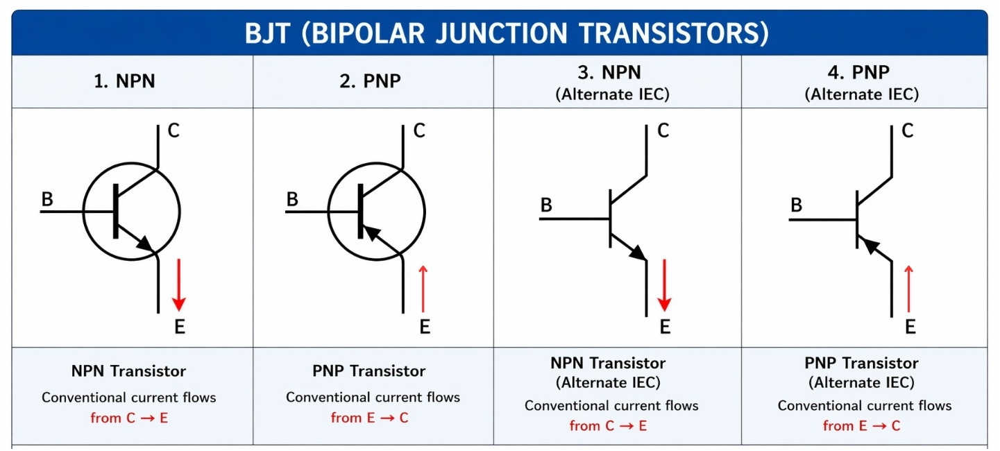
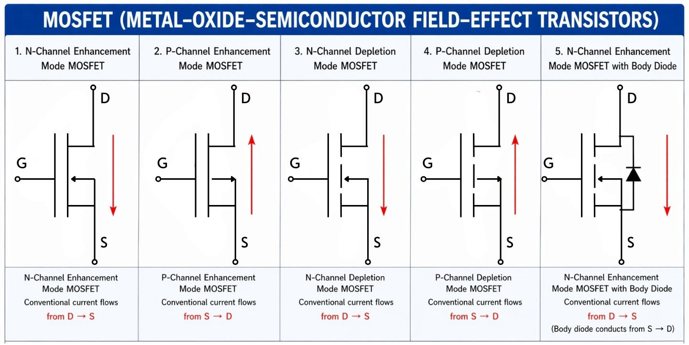
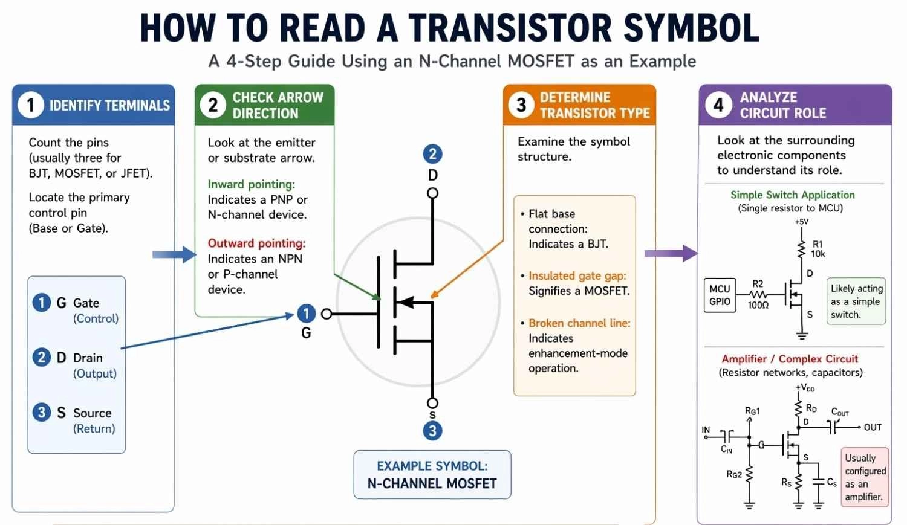
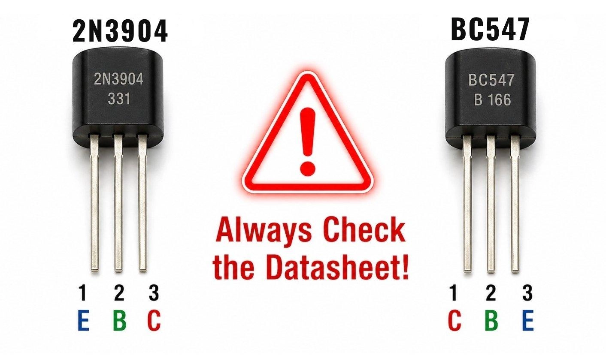
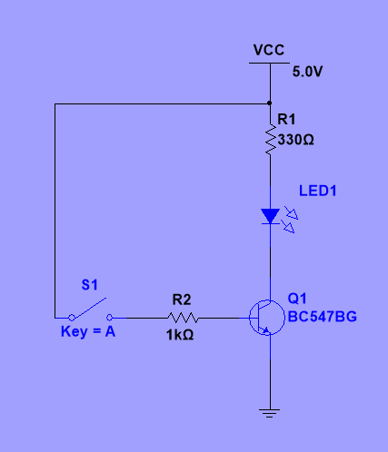
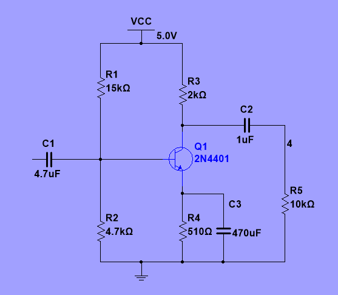
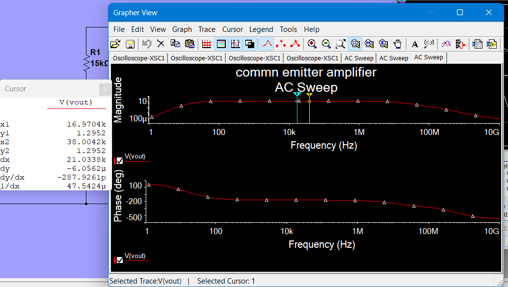
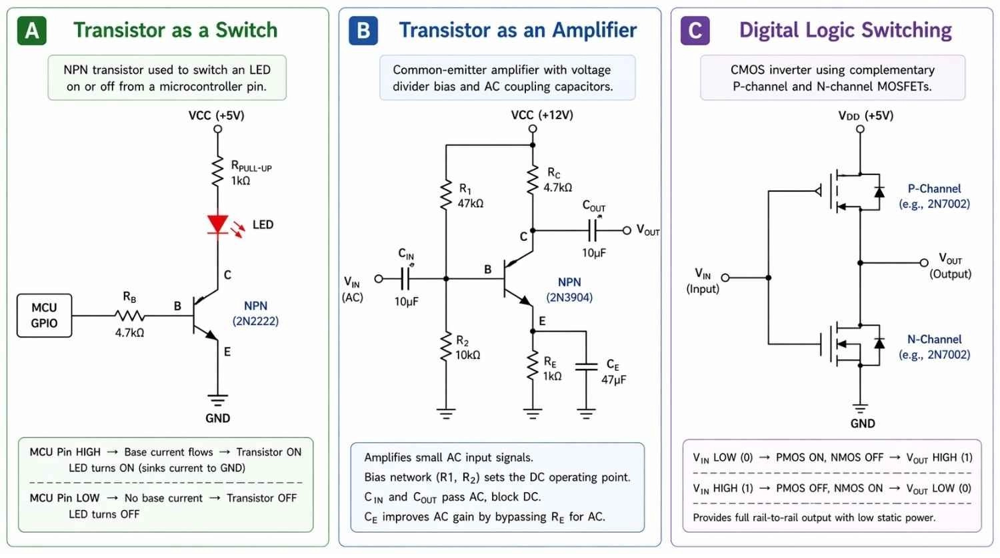

Transistor Investigation:
“Control a Real Load”
Mastering Bipolar Junction Transistors (BJTs) and FETs: Switching from Cut-off to Saturation, Small-Signal Common-Emitter Amplification, and Phase Inversion.
🧠 Knowledge (K)
- BJT types (NPN, PNP) & FET types (N-ch, P-ch)
- Cut-off, Active, and Saturation operating regions
- Small-signal gain ($A_v$) and $180^\circ$ phase inversion
- Frequency response & AC sweep analysis
🛠️ Skills (S)
- Reading datasheets & avoiding the TO-92 pinout trap
- Simulating & breadboarding a transistor LED switch
- Biasing & measuring a common-emitter amplifier
- Diagnosing deliberate bench wiring & component faults
💼 Behaviours (B)
- Mandatory pre-power safety & current-limiting
- Predict $\rightarrow$ Simulate $\rightarrow$ Build $\rightarrow$ Test $\rightarrow$ Explain
- Evidence-backed documentation for assignment PoE A03
- Methodical root-cause fault elimination
The Microcontroller Drive Challenge
The Scenario: You are working as a Junior Control Engineer on a new industrial machinery interface.
The system's digital microcontroller (e.g. Arduino / STM32) outputs a 3.3 V or 5.0 V logic signal with a maximum pin current of only 20 mA. However, the machine operator panel requires switching a high-intensity indicator lamp and industrial solenoid requiring 12 V at 150 mA.
Connecting the 150 mA load directly to the microcontroller GPIO will immediately fry the internal output silicon! We must design an intermediate transistor switching interface where a micro-power base current switches a macro-power collector current.
Additionally, the sensor team needs an analogue small-signal preamplifier to boost tiny vibration sensor signals before ADC digitisation.
Engineering Toolbox: Weeks 1 & 2 Diagnostic Retrieval
Before controlling transistors, prove your mastery of semiconductor PN-junction fundamentals from Weeks 1 & 2. Complete these four diagnostics on your individual whiteboard or notebook:
Q1. PN-Junction Barrier Potential
What is the standard forward voltage drop ($V_f$) required across a standard silicon PN-junction before significant current conducts?
Silicon requires ~0.7 V forward bias to overcome the internal depletion region barrier. In a BJT, the Base-Emitter junction acts as this exact silicon diode!
Q2. Current Flow & Polarity
In conventional current flow, through which terminal does current enter a standard diode, and what happens when reverse bias is applied below breakdown?
Under reverse bias below $V_Z$, the depletion zone widens and only negligible nanoamp leakage current flows (effectively an open circuit).
Q3. Multimeter In-Circuit Voltage Measurement
To measure the voltage drop across a transistor terminal (e.g. $V_{CE}$), how must the DMM test leads be connected relative to the circuit?
Red lead to Collector, Black lead to Emitter (or 0V common ground). Never connect an ammeter in parallel with a powered supply!
Q4. Transistor Selection Reasoning
Why can't a simple resistor divider be used to drive a heavy 150 mA load directly from an MCU output?
Resistive dividers have high Thevenin impedance; drawing 150 mA causes the voltage to collapse to near zero. An active device (transistor) provides power amplification.
Transistor Taxonomy: BJTs vs FETs
Transistors are three-terminal semiconductor devices falling into two primary families based on whether current flow is controlled by base current or gate voltage:
Most widely used BJT. Forward-biased Base-Emitter conducts electrons. A small positive base current controls a larger collector current.
Arrow points OUT on E
Complementary to NPN. Base voltage must be pulled lower than Emitter to conduct. Commonly used in high-side load switching.
Arrow points IN on E
Field-Effect Transistor. Insulated Gate draws virtually zero DC current ($I_G \approx 0$). Gate threshold voltage ($V_{GS(th)}$) controls Drain-Source conduction.
Ideal for high power
High-side FET switch. Turning ON requires pulling the Gate negative relative to the Source ($V_{GS} < -V_{th}$). Very low static gate power.
High-side DC rail switch


Anatomy of a Transistor Symbol & Terminal Reading
| BJT Terminal | FET Terminal | Functional Purpose |
|---|---|---|
| Base (B) | Gate (G) | The Control valve. Governs current flow between the other two terminals. |
| Collector (C) | Drain (D) | The Reservoir terminal connected to load and positive supply rail (for N-type). |
| Emitter (E) | Source (S) | The Return terminal where total current exits towards ground/return rail. |
- NPN: Not Pointing iN (Arrow points outward on Emitter).
- PNP: Points iN Proudly (Arrow points inward toward Base).

Datasheet Workshop: The “TO-92 Pinout Trap”
A major source of breadboard failure in commercial electronics labs is assuming all three-pin plastic TO-92 transistors share the same pin sequence.
Pin 1: Emitter (E)
Pin 2: Base (B)
Pin 3: Collector (C)
(Sequence: E - B - C)
Pin 1: Collector (C)
Pin 2: Base (B)
Pin 3: Emitter (E)
(Sequence: C - B - E)
Result of Swapping: Collector and Emitter are reversed! The circuit will barely conduct, current gain collapses from $\beta \approx 200$ down to $\beta_{reverse} \approx 3$, causing the switch or amplifier to fail completely!

Transistor Operating Regions: Cut-Off, Active & Saturation
An NPN bipolar junction transistor operates in one of three distinct physical modes determined by the biasing across its two internal PN-junctions ($J_{BE}$ and $J_{BC}$):
1. Cut-off Region (Switch OFF)
- Both Base-Emitter and Base-Collector junctions are reverse biased.
- Collector-Emitter path behaves as an open circuit switch ($R_{CE} \approx \infty$).
- Full supply voltage appears across Collector-Emitter: $V_{CE} \approx V_{CC}$.
- Load is completely de-energised (LED OFF).
2. Active / Linear Region (Amplifier)
- Base-Emitter junction is forward biased; Base-Collector is reverse biased.
- Collector current is strictly proportional to base current ($I_C = h_{FE} \cdot I_B$).
- $V_{CE}$ sits between $0.2\text{ V}$ and $V_{CC}$ (e.g. $V_{CC}/2$ for max dynamic range).
- Used for audio/analogue signal amplification.
3. Saturation Region (Switch ON)
- Both Base-Emitter and Base-Collector junctions are forward biased.
- Collector current is limited only by external load: $I_{C(sat)} \approx \frac{V_{CC} - V_{LED}}{R_C}$.
- Collector-Emitter behaves as a closed switch ($V_{CE} \approx 0.15\text{ V}$).
- Load is fully energised (LED bright ON).
Think of the collector current as high-pressure water from a reservoir. The Base current is your hand turning the valve tap. Tap fully shut = Cut-off (zero flow). Tap partially open = Active (water flow proportional to hand angle). Tap turned wide open = Saturation (maximum flow governed strictly by pipe diameter, turning tap further yields no more water).
Virtual Lab: Transistor Operating State Simulator
Connect the circuit schematic to the live simulation below: Adjust the microcontroller base input voltage ($V_{in}$) and base resistor ($R_B$) to observe how voltages at Test Points TP1 ($V_B$) and TP2 ($V_C$) govern the transistor operating region:

Bench DMM Virtual Probes
Pre-Power Verification: Safe Electronic Working Practices
Before energising your breadboard from the DC power supply, complete every item with your practical partner. Tick each check once verified:
- 1. Pinout Verification: Transistor flat face checked against datasheet pinout (Avoided TO-92 trap: E-B-C verified).
- 2. Current-Limiting Base Resistor: Base resistor ($R_B = 10\text{ k}\Omega$) confirmed in series between input and Base (never drive Base direct!).
- 3. Collector Load Resistor: Load resistor ($R_C = 330\ \Omega$) connected in series with LED Anode to limit maximum diode current to ~10 mA.
- 4. Supply Voltage & Current Limit: Bench PSU dialled to exactly 5.0 V DC with current limit preset to $\le 100\text{ mA}$.
- 5. Common Ground Bus: Emitter, power supply negative terminal, and signal source 0V return tied to the common ground rail.
Unlike passive resistors, semiconductors have an exponential $I$-$V$ characteristic across the Base-Emitter junction:
If a 5V signal is connected directly to the Base of an NPN BJT, the forward-biased PN junction will attempt to drop 0.7V against a 5V source. Without $R_B$ to drop the remaining 4.3V, massive current (> 1 Ampere) surges through the microscopic silicon wire bond, vaporising it in less than 50 milliseconds!
Always verify your $R_B$ resistor band colour codes ($10\text{ k}\Omega = \text{Brown-Black-Orange}$) before inserting wires.
Build a Transistor Switch: Controlling an LED Load
- Construct the circuit on breadboard exactly as shown in the schematic.
- Connect a DMM (DC Volts mode) across Collector and Emitter ($V_{CE}$).
- Connect a second DMM across Base and Emitter ($V_{BE}$).
- State A (0 V Input): Connect the base input lead to Ground ($0\text{ V}$). Observe the LED and record $V_B, V_C, V_{CE}$.
- State B (5 V Input): Connect the base input lead to $+5\text{ V}$. Observe the LED and record $V_B, V_C, V_{CE}$.
• 5 V Input: LED ON, $V_{BE} \approx 0.72\text{ V}, V_C \approx 0.18\text{ V}, V_{CE} \approx 0.18\text{ V}$
Switch Design Sizing: Overdrive Factor & Base Sizing
To guarantee that the transistor operates in deep saturation (ensuring minimal $V_{CE}$ drop and lowest transistor heating), follow this professional engineering workflow:
$$I_C = \frac{V_{CC} - V_{LED} - V_{CE(sat)}}{R_C} = \frac{5.0\text{ V} - 2.0\text{ V} - 0.2\text{ V}}{330\ \Omega} = \frac{2.8\text{ V}}{330\ \Omega} \approx 8.5\text{ mA}$$ Step 2: Determine Minimum Base Current ($I_{B(min)}$)
From 2N4401 datasheet, minimum current gain $\beta_{min} \approx 100$: $$I_{B(min)} = \frac{I_C}{\beta_{min}} = \frac{8.5\text{ mA}}{100} = 0.085\text{ mA} = 85\ \mu\text{A}$$ Step 3: Apply Saturation Overdrive Factor ($k = 3 \text{ to } 5$)
$$I_{B(design)} = k \cdot I_{B(min)} = 5 \times 0.085\text{ mA} \approx 0.43\text{ mA}$$ Step 4: Calculate Base Resistor Value ($R_B$)
$$R_B = \frac{V_{in} - V_{BE}}{I_{B(design)}} = \frac{5.0\text{ V} - 0.7\text{ V}}{0.43\text{ mA}} = \frac{4.3\text{ V}}{0.43\text{ mA}} \approx 10\text{ k}\Omega$$
Test what occurs when you change $R_B$ and $R_C$ on your breadboard or simulation:
$I_B$ drops to $\sim 43\ \mu\text{A}$. The transistor slips out of saturation into the active region! $V_{CE}$ rises to $\sim 1.5\text{ V}$, LED dims, and the transistor dissipates heat.
$I_B$ increases to $4.3\text{ mA}$. Transistor enters deep, hard saturation with lowest $V_{CE} \approx 0.09\text{ V}$. Safe for MCU since $4.3\text{ mA} < 20\text{ mA}$ limit.
Load current doubles to $\sim 18.6\text{ mA}$. LED shines noticeably brighter.
Activity 3: Single-Stage Common-Emitter Amplifier

Every component in this circuit has a precise engineering function:
Waveform Dynamics & The 180° Phase Inversion
When viewing input Channel 1 ($v_{in}$) and output Channel 2 ($v_{out}$) on the oscilloscope, you will observe two unmistakable characteristics:
A small input peak-to-peak voltage ($v_{in} = 50\text{ mV}_{p-p}$) emerges as a large output swing ($v_{out} = 1.25\text{ V}_{p-p}$). $$|A_v| = \frac{v_{out(p-p)}}{v_{in(p-p)}} = \frac{1.25\text{ V}}{0.05\text{ V}} = 25\text{ (or } 28\text{ dB)}$$ 2. 180° Phase Inversion ($\Delta \phi = 180^\circ$):
When the input voltage swings POSITIVE, the output voltage swings NEGATIVE!
Input $v_{in}$ rises $\implies$ Base current $i_b$ rises $\implies$ Collector current $i_c$ rises $\implies$ Voltage drop across $R_C$ ($i_c R_C$) increases $\implies$ Collector voltage ($V_C = V_{CC} - i_c R_C$) DROPS!
AC Sweep: Frequency Response & Amplifier Bandwidth

An AC frequency sweep demonstrates that an analogue amplifier cannot provide constant gain across all frequencies. It exhibits three key operating regions:
Coupling capacitors ($C_1, C_2$) and bypass ($C_E$) have high capacitive reactance ($X_C = \frac{1}{2\pi f C}$), attenuating input signal transfer and dropping gain.
The designed operating band (e.g. 100 Hz to 50 kHz). Capacitors act as AC short circuits, producing steady maximum gain ($A_{v(mid)}$).
Internal transistor parasitic capacitances ($C_{be}, C_{bc}$) shunt signal current to ground, causing gain to drop at high frequencies.
Interactive Tool: Common-Emitter Biasing & Gain Calculator
Input your amplifier component values to compute the DC Q-point ($V_B, V_E, I_C$) and AC voltage gain ($A_v$):
Calculated DC & AC Output
Troubleshooting Challenge: Diagnosing Circuit Faults
Your tutor has introduced a deliberate fault into your hardware setup. Select a symptom below to follow the engineering diagnostic workflow:
LED lights up very faintly or not at all even with $5\text{ V}$ input applied to $R_B$.
Applying $5\text{ V}$ to test lead does nothing; Base reads $0.0\text{ V}$ directly on pin.
Transistor saturates ($V_{CE} \approx 0.15\text{ V}$) but zero light output from LED.
Circuit behaves erratically or fluctuates when hands approach breadboard.
Diagnosis: Fault 1 — Reversed Transistor Pinout (TO-92 Trap)
Symptom: When 5V is applied, $V_{BE}$ measures only ~0.5V and collector current is constrained to < 1 mA.
Measurement Logging & Portfolio of Evidence Records
Record your physical bench measurements below. Values are saved to local storage and can be copied in one click to paste into your Microsoft Form:
| Circuit Mode | Input Signal | Base Voltage ($V_B$) | Collector ($V_C$) | $V_{CE}$ Voltage | Operating Region |
|---|---|---|---|---|---|
| Transistor Switch | 0.0 V (Ground) | Cut-off (OFF) | |||
| Transistor Switch | 5.0 V ($V_{CC}$) | Saturation (ON) | |||
| Common Emitter | AC $50\text{ mV}_{p-p}$ | Active (Linear) |
PoE A03 Submission: Microsoft Forms Portfolio Integration
In accordance with the Unit 19 Master Scheme of Learning (Week 3), your submitted evidence must document:
- ✅ Simulation Screenshot: Switch and common-emitter amplifier circuit in Multisim / Wokwi / LiveSPICE.
- ✅ Bench Photograph: Clear photograph of your physical breadboard circuit with student ID card visible.
- ✅ Physical Test Data: Recorded voltages for $V_B, V_C, V_{CE}$ in 0V and 5V switch states.
- ✅ Calculations & Gain: Computed saturation base current and amplifier voltage gain ($A_v$).
- ✅ Technical Explanation: Concise engineering analysis of Cut-off, Active, and Saturation regions.
https://forms.cloud.microsoft/e/Vu1dZuzfut
Submit Evidence Directly
Click below to slide out the built-in Microsoft Forms drawer without navigating away from your test bench notes.
Plenary: Traffic-Light Confidence Self-Evaluation
Reflect on your engineering learning across today's 160-minute practical session against the Pearson BTEC Unit 19 grading criteria:
Pass Standard
- I can correctly identify BJT (NPN/PNP) and FET terminals from a datasheet.
- I safely assembled and tested a functional transistor LED switch on breadboard.
- I recorded verified measurements for base and collector voltages.
Merit Standard
- I can clearly explain the internal difference between Cut-off and Saturation.
- I compared physical measurements against SPICE simulation predictions.
- I calculated the base resistor required for deep saturation.
Distinction Standard
- I explained Active linear operation, voltage gain, and $180^\circ$ phase inversion.
- I systematically located and documented a circuit fault without tutor assistance.
- I suggested engineering improvements to increase bandwidth or efficiency.
Engineer Exit Ticket: Final Diagnostic Check
Complete these three questions in the Microsoft Forms drawer before leaving the laboratory:
What voltage condition between Base and Emitter ensures that a silicon NPN BJT enters conduction, and what is $V_{CE}$ when in deep saturation?
If our transistor switches an inductive solenoid coil instead of an LED, why MUST a flyback diode be placed in parallel with the coil?
Explain using Ohm's law ($V_C = V_{CC} - I_C R_C$) why the output of a common-emitter amplifier is $180^\circ$ out of phase with the input.
Superb engineering accomplishment today! You have successfully mastered transistor terminal identification, avoided destructive pinout traps, verified electronic switching under real loads, observed $180^\circ$ phase inversion, and analysed AC frequency sweeps.
Op-Amp Investigation — “Condition the Sensor Signal”
Operational amplifiers, negative feedback, inverting/non-inverting configurations, comparators,
and filter cut-off frequencies.
SEND Support Pack, Technical Glossary & Formula Card
